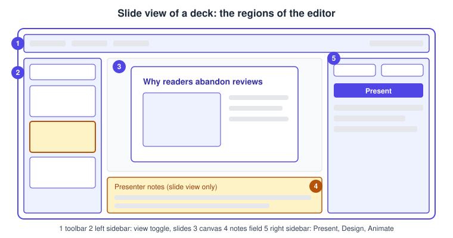
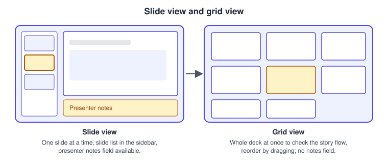
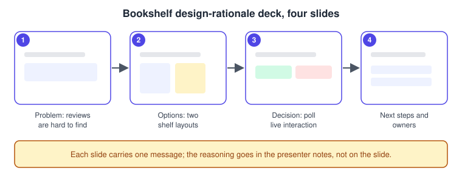

Figma Slides
|
This content was generated with the assistance of AI and should be verified against the official documentation before being relied on in production. |
This page was written on 2026-10-30 against the UI3 interface. Figma Slides is its own product in the Figma family, next to Figma Design and FigJam; you create a deck from the file browser and it opens in the Slides editor. The help articles on creating decks, templates, live interactions, prototypes in slides, spotlight and PowerPoint import describe these features as available on any plan, and do not name a seat for creating or editing a deck beyond edit access to the file or team. Design mode is the exception: it needs a Full seat and edit access, and one help article still labels it a limited beta, so check the current article before relying on it in a client engagement. Slides is not marked as beta in the help centre navigation. The seat and plan model is explained on Plans, Seats and AI Credits.
The running example is the Bookshelf team preparing a design-rationale deck for stakeholders: why the review flow was redesigned, which shelf layouts were considered and what was decided. For the wider process around such a review see UX Process and Design Thinking.
The editor at a glance
The Slides editor has a toolbar (adding objects, library assets, AI tools and the design mode toggle), a left sidebar (slide list, view toggle and template picker), the canvas, and a right sidebar with the Present button and the Design and Animate tabs. In slide view a presenter notes field sits under the slide.

Slide view and grid view
Switch between the two views with the toggle in the left sidebar. Slide view shows one slide at a time and is where you refine a design and write presenter notes. Grid view shows the whole deck, which suits checking the flow of the story and reordering. In grid view the sidebars mostly stay hidden until you select an object.

Useful controls documented for the canvas and slide list:
-
Pan with the Hand tool (H) or by holding Space and dragging; zoom with Command and scroll on macOS or Control and scroll on Windows, or by pinching on a trackpad.
-
Add a slide with New slide in the left sidebar; the slide is inserted after the selected one.
-
Duplicate a slide with Command D (macOS) or Control D (Windows); delete it with Delete.
-
Move a slide up or down with Command [ or Command ] (macOS), or Control [ or Control ] (Windows), or drag it in either view. Dragging a slide under or next to another builds a slide group.
-
Skip a slide by right-clicking it and choosing Skip slide. A skipped slide does not play and is left out of a PDF export, but you can still edit it. Unskip uses the same menu.
Templates and libraries
Templates supply colours, fonts and slide layouts. Two routes are documented: in the file browser open Templates and tools, pick a template from the Community tab or your team’s tab (slide decks are under Presentations) and choose Use template; or, inside a deck, click New slide and browse the template picker. You can add layouts from as many templates as you like, and once a layout is in the deck its colour and font styles are available throughout. Paid-plan users can publish custom templates to a team or organization. Design libraries can be added to a deck too, which is how a Bookshelf brand library reaches the slides; see Libraries and Publishing.
Design mode
Design mode brings Figma Design features into Slides: auto layout, the layers panel and advanced layer properties such as component properties and instance swap, blend modes, strokes, effects and export settings. Turn it on with the toolbar toggle or Shift D (macOS and Windows). It requires a Full seat and edit access. Variable modes cannot be created in Slides: create the modes in Figma Design, publish the variables in a library and add that library to the deck. See Auto Layout and Variables, Collections and Modes for the underlying features.
Live interactions and embedded prototypes
Live interactions are objects the audience can use during a presentation. Open Inserts, choose Interactive and click the type you want. The documented types are Poll (a question or vote, with results hidden until voting closes if you wish), Stamps (audience mood shown as avatars) and Alignment (anonymous opinions, hidden until voting ends). Results update in real time and are kept after the session. Audience members must be logged in and have at least view access, and interactions do not work inside the editor: share the presentation link instead.
An interactive prototype can be placed on a slide with Live interactions in the toolbar and then Prototype, choosing a recent prototype or pasting a Figma Design link. Use the Flow setting if the page has several flows and the Device frame toggle to remove the frame. Limits: password-protected prototype files cannot be added, the aspect ratio cannot be changed, and the device frame type cannot be changed in Slides. Audience members also need view access to the prototype file, so grant it before presenting. Prototype building itself is on Prototyping Basics.
Transitions and animations
The Animate tab in the right sidebar adds a transition between slides: pick a style, then adjust direction, easing, duration and timing, and use one transition on a single slide or the whole deck. Smart animate matches objects across adjacent slides, so duplicate a slide and move or resize objects on the copy. Object animations apply to a single object (one per object) via Add animation; the first one plays on click. The Animate settings behave the same in slides and design mode. The prototype-level equivalents are covered on Smart Animate and Transitions, Easing and Springs.
Presenter notes and presenting
Notes are written in slide view, in the field under the slide (use the Show presenter notes handle if it is hidden). Anyone with edit access can write them. They support basic Markdown: bold, italic, strikethrough, and ordered and unordered lists. An AI Start with a draft option exists for slides that have text, and admins can disable it; see Figma AI Tools. Comments cannot be added to the notes field.
To present, click Present in the right sidebar. Present opens the deck in a new tab without notes; Present + Notes opens a tab with notes plus a separate audience-view window. When you share your screen in a video call, share the audience-view window so viewers see only the slides. Copy presentation link gives the audience a link where they can use live interactions. Presenters need at least view access. Make available offline is in the options menu of the presenter view; embedded prototypes and YouTube videos do not work offline. With spotlight (Spotlight me from the Multiplayer tools menu) viewers who joined by link follow your slides, and presenters can hand control to each other.
PowerPoint import and export
To import, click Import in the file browser, choose Import from computer and select a .pptx file (other formats are not supported). Imports go to your drafts by default; importing into a team needs edit access to that team. Text switches to the default font Inter, and videos, tables, diagrams and animations are not imported, so review the deck carefully and rebuild those parts.
To export, open Main menu, then File, then Export slides to, and choose PPTX or PDF. PDF offers a colour profile (sRGB or Display P3) and quality; PPTX lets you keep objects editable or flatten them to bitmaps. In PPTX, fonts missing from PowerPoint fall back to its default, live interactions and code blocks become static images, and gradients become solid fills. Bulk export is not supported. Anyone with view access can export the deck unless the owner restricted copying and exporting. Broader migration advice is on Importing and Migrating.
Presenting design rationale to stakeholders
A rationale deck works best with one message per slide, evidence on the slide and reasoning in the notes. The Bookshelf deck follows the structure below.

Procedure: build and present the Bookshelf rationale deck
-
In the file browser open your team folder, click Create new, then Slide deck.
-
In the template picker choose a template, or Start from scratch.
-
Click New slide and add a layout for each of the four slides; rename the title text on each.
-
Switch to grid view and drag slides until the order reads problem, options, decision, next steps.
-
On the decision slide choose Inserts, Interactive, Poll and enter the question "Which shelf layout should we ship?".
-
Switch to slide view and write the reasoning for each slide in the presenter notes.
-
Select slide 2, duplicate it with Command D or Control D, then pick a transition in the Animate tab.
-
Click Present, choose Present + Notes, share the audience-view window and send the presentation link to stakeholders.
-
After the session read the poll results on the slide and export a PDF with Main menu, File, Export slides to for people who could not attend.
Where older guides are outdated
-
Books that show the old interface (UI2) describe a toolbar and panels that no longer exist; UI3 has been mandatory since 2025-04-30, and the left navigation bar changed again on 2026-01-07.
-
Seat wording in older books ("editor", "viewer", paid seats) predates the Full, Dev, Collab and View seats of 2025-03-11. Design mode in Slides depends on a Full seat.
-
Books that describe Figma AI as in beta predate the current AI tools and credits; see Figma AI Tools (AI credits are covered on the plans page).